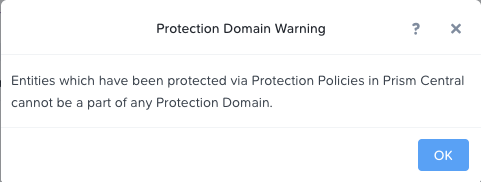

Protection Domains¶
In Prism Element > Data Protection > Table, click + Protection Domain > Async DR to begin creating a PD.
Note
Synchronous replication (Metro Availability) is currently support on ESXi and will be supported in AHV in a future release.
When opening the Data Protection context of the menu a warning screen will appear. Click on the OK button to move forward.

Provide a name for the PD, and click Create.
Filter or scroll to select the VMs created during this lab that you want to add to the PD.
Click Protect Selected Entities and verify the VMs appear under Protected Entities.
Consistency groups allow you to group multiple VMs to be snapshot at the same time, e.g. multiple VMs belonging to the same application.
Note
Nutanix snapshots can perform application consistent snapshots for supported operating systems with NGT installed. Each VM using application consistent snapshots will be part of its own consistency group.
Click Next.
Click New Schedule to define Recovery Point Objective (RPO) and retention.
Configure your desired snapshot frequency (e.g. Repeat every 1 hour)
Note
AHV supports NearSync snapshots, with RPOs as low as 1 minute.
Note
Multiple schedules can be applied to the same PD, allowing you to take and retain X number of hourly, daily, monthly snapshots.
Configure a retention policy (e.g. Keep the last 5 snapshots)
Note
For environments with remote cluster(s) configured, setting up replication is as easy as defining how many snapshots to keep at each remote site.

Click Create Schedule.
Click Close to exit.
Additional information can be found here.
That’s it! You’ve successfully configured native data protection in Prism.